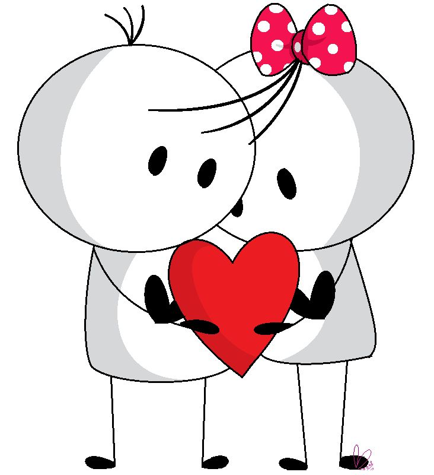

Querida Dani presiosa...
Hoy quiero tomar un momento para expresarte lo profundamente agradecido y afortunado que me siento por tenerte en mi vida. Cada día que pasa, mi amor por ti crece más y más, y cada momento que compartimos se convierte en un tesoro invaluado en mi corazón.
Tu sonrisa ilumina mis días y tu presencia llena mi mundo de alegría y felicidad. En cada mirada tuya, encuentro un refugio donde puedo ser yo mismo sin temor ni inhibiciones. Tu amor me ha enseñado que la verdadera belleza reside en el interior, y en ti he encontrado una belleza que trasciende cualquier superficialidad.
Tus abrazos son mi refugio seguro, y tus palabras de aliento son como melodías que calman mi alma. Cada vez que compartimos una risa, cada conversación profunda que tenemos, se convierte en un recordatorio constante de la profunda conexión que compartimos.
El camino que estamos recorriendo juntos, construyendo recuerdos, superando desafíos y soñando con un futuro compartido, es un viaje que valoro más que cualquier otra cosa en el mundo. Mi amor por ti no se puede medir con palabras, pero quiero que sepas que es más profundo de lo que puedo expresar.
Eres mi roca, mi confidente y mi compañera de vida. No importa lo que el futuro nos depare, quiero que sepas que estoy aquí a tu lado, para apoyarte en cada paso del camino. Tus sueños son mis sueños, tus alegrías son mis alegrías, y cada día que paso contigo es un día en el que siento que estoy viviendo mi mejor vida.
Así que, mi amor, quiero que recuerdes esto: eres la razón por la que mi corazón late más rápido, por la que mis ojos brillan de emoción y por la que mi vida está llena de significado y felicidad. Eres mi todo, y nunca dejaré de agradecer al destino por habernos unido en este hermoso camino de amor.
Con todo mi amor y gratitud.
amor Braulio
